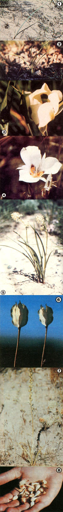

These two lilies are very similar in appearance, but make no mistake in distinguishing them when you are wild-food foraging...because one plant is delicious, but the other can be deadly!
The Sego Lily and the Death Camass
Larry J. Wells
Over 130 years ago, when a bad harvest threatened the existence of Utah's first white settlers, the area's native American residents introduced the newcomers to a life-sustaining plant called "sego" in the Shoshonean language. This edible wildling of the Liliaceae family, Calochortus nuttallii, kept the Mormons alive, and later became Utah's state flower. The sego lily is, therefore, protected in that state and is thus illegal to gather in Utah . . . except in a dire emergency.
Fortunately, 57 separate species of Calochortus can be found from Canada in the north to Guatemala in the south, and from the Pacific Coast to the Dakotas . . . and 40 of these are considered edible. Nine species are reported to grow in the Rocky Mountains . . . the remaining sego lilies, for the most part, are found on the West Coast (there are 28 species in California alone). You may know the plants as cat's-ear, purple-eyed mariposa, star tulip, butterfly tulip, butterfly lily, or mariposa lily.
ELEGANT AND EDIBLE
Calochortus favors sunny southern exposures . . . and its single grasslike, blue-green leaf is often one of the first bits of foliage to appear each spring. In the Rocky Mountain region, this wild food can be found at altitudes ranging from 4,000 to 7,000 feet, with a few species continuing up to 10,000foot elevations (this will vary by latitude). The mountain lilies prefer dry or well-drained meadows and open-timbered areas. The best places to search for the lowland species, on the other hand, are within sagebrush, open brush, and grassland communities.
When they're in full bloom, sego lilies vary in height from 2 to 18 inches. The flowers resemble tulips in shape and can be white, cream, yellow, purple, pink, salmon, or scarlet. Depending on latitude and elevation as well as species, this wild forageable will blossom from April to late August. (For example, I've found a beautiful salmon-colored variety in bloom, in April, among Arizona's Superstition Mountains ... and a small white species flowering in late August, at 10,000 feet, in central Idaho's Pioneer Mountains.)
Although the plants multiply chiefly by bulb division, a seed pod does form at the death of the flower. Its size and shape depend on the species, but all of them-when sliced horizontally-will be seen to have three sections. The dry pods and stems often stay standing through late winter and into spring if the season's snowfall is light. This fact helps make the plant an excellent survival food, too, since (if the ground isn't frozen) you can locate and dig the tasty bulb at any time of the year.
All parts of those sego lily species shown here ( C. nuttallii and C. elegans ) are edible. Most folks especially like the nutritious bulbs, which are found about 4 to 6 inches deep in the ground and range from 3/8 to 1 inch in diameter. The subterranean treats have dark brown covers but are pearly white when peeled . . . and if sliced horizontally, the starchy bulb will show only four onion-like rings. This is an important fact to remember when making certain you haven't picked a mufti-ringed death camass by mistake. Do not eat these plants without making a positive identification . . . backing up the information given here with a good field guide or the advice of an experienced local forager.
Because the sego lily is such a beautiful flower and so sparsely scattered in some regions, you should dig its bulbs only when the plants are found growing in profusion . . . and even then (unless your survival is at stake), be sure to leave at least half the patch and to rotate your gathering areas.
A DEADLY LOOK-ALIKE
Great care must be taken not to confuse the widely scattered sego lily with another member of the Liliaceae family, the death camass (genus Zigadenus ). Various species of the latter may be found all across temperate North America. Eight types occur in the Rocky Mountains (among the most common are Z. elegans, Z. paniculatus, Z. gramineus, and Z. venenosus ) and 17 in the intermountain area. Some of the plant's familiar names are wand lily, coxcomb, wild mignonette, sand corn, alkolic grass, and-in the southeastern states, a range it does not share with the sego lily-crow poison and St. Agnes feather.
The semidesert varieties of Zigadenus are generally found in dry ground at lower elevations (2,000 to 7,000 feet). The mountain species prefer moist areas (unfortunately, they'll often grow right next to an edible blue camass, Camassia quamash, in wet meadows) and semiwooded areas from 6,000 to 12,000 feet in elevation. In the northern and southeastern United States, the plants are at home in bogs, coastal plains, and wet pine lands.
When in bloom, the death camass ranges from 6 inches all the way up to 8 feet tall. The flowers are either white, greenish white, or cream-colored and-in the West-tend to have general characteristics similar to those of the example shown in the accompanying photos. Depending upon latitude, elevation, and species, they may bloom from March to August, with Z.paniculatus being one of the first plants to appear in the Rocky Mountain sagebrush communities. However, in contrast to the single bluegreen blade of the sego lily shoot (C. nuttallii), two to six of the death camass's bright green leaves break through the soil at about the same time. Also, a crosscut will reveal that the young leaf of Z. paniculatus is V-shaped, while a cross section of the edible lily's new leaf is U-shaped. But like those of the sego, the camass's dry seed pods often stay on well into-or throughthe winter.
The bulbs of Z. paniculatus and Z. elegans are 1/2 to 1-1/2 inches in diameter and-as is the case with many sego lily species-are found 4 to 6 inches deep in the ground. They're covered with black or dark brown skins, and a cross section will reveal many layers or rings, similar to those of an onion but without the onion odor.
DANGER! BEWARE!
All parts of the death camass are toxic, and the fact that the sego lily, wild onion, and death camass often grow side by side-sometimes within inches of one another-makes proper identification essential and difficult. For example, when digging the sego lily or wild onion, it's not unusual to break the stem from the bulb . . . and, in searching for the lost edible, to come up with the bulb of a death camass instead! A single one of the poisonous bulbs-even if added to a large stew-can be dangerous . . . so knowing and checking the number of rings could prevent your becoming a medical statistic.
In addition, keep in mind that a wild onion smells like an onion, and a death camass does not. (It's important, though, when checking for the onion odor, to be sure you're not simply smelling the scent of previously picked plants on your hands.) Remember, too, that wild onion and sego lily bulbs are generally smaller than death camass bulbs. Unfortunately, even the foregoing tips won't help you distinguish between the edible blue camass (Camassia quamash) and the death camass, so collect blue camass only when the fully identified flowering plant is still attached to the bulb.
Should you or someone with you ever make the mistake of eating Zigadenus, the symptoms will be a slowed heartbeat, stomach and abdominal pains, and vomiting. Give the victim fluids and induce vomiting if it doesn't occur spontaneously. In either case, administer fluids to help flush the stomach. Then the patient should be hospitalized as soon as possible . . . so that his or her potassium levels and heart function can be monitored.
If you're always careful to check the rings, the smell, and (for blue camass) the color of the flower, accidental poisoning should never occur. Once the proper precautions are taken, you'll have no reason (except where there's a scarcity of this tasty plant) to fear or forgo the epicurean delight of a sego lily dish.
EDITOR'S NOTE: Larry Wells has taught Stone Age living skills and primitive survival since 1970, and is currently field director and chief instructor at the School of Urban and Wilderness Survival, Idaho Section. He's also coauthor of You Can Stay Alive, a concise how-to book on wilderness living and emergency survival, which can be obtained by sending $5.95 to Larry Wells, Dept. TMEN, P. O. Box 431, Idaho Falls, Idaho 83402.
|
 [1] The single grasslike blade of the sego lily is blue green in color. [2] But the new multi-leaved shoots of the lookalike death camass are bright green. [3] Looking like tulips, sego lily blooms come in many colors. [4] Here's one fully open. [5] Death camass flowers are either white, greenish white, and cream-colored. [6] The three-sectioned sego lily seed pods taste similar, either raw or cooked, to young peas. [7] All parts of the death camass are poisonous, including the seed pods. [8] Sego lily bulbs taste much like potatoes. |
|
|